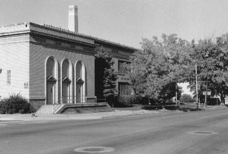

Ebert Grammar School, 410 Park Avenue West

Cassady spent six years here, 1932-1938.
``Then we entered the modern building of gleaming white firebrick that is
Ebert Grammar School...So, in defiance of Denver's geography, I went to
Ebert six straight years. And this was no mean foot-feat: I always lived at
least a mile from the school, and often more even as many as four. In fact,
it was the many mornings of racing these miles (since I seldom had carfare
or would use it if I had) so as not to be late, that must have led to my
becoming so interested in long-distance running.'' [First Third, p. 53]
Literary Kicks
Neal's Denver
Contributed by
Andrew Burnett